最近巴黎奥运会，各国纷纷派出代表队参加比赛。
对于任何一个国家来说，看着自家运动员夺得金牌，看着国旗升起、国歌奏响，都是充满荣耀和感动的时刻。
8月5日，阿尔及利亚选手，17岁小将凯莉亚·内穆尔高分夺得体操女子高低杠金牌。
这是阿尔及利亚本次奥运首金，非洲史上体操首金。
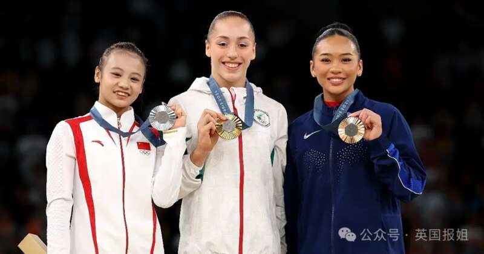
（中国队银牌得主邱祺缘、阿尔及利亚队金牌得主凯莉亚·内穆尔和铜牌得主苏尼莎·李）
随着这枚意义重大的金牌到手，阿尔及利亚国歌响彻法国上空。
对于阿尔及利亚人民来说，这一时刻有更多的意义……
毕竟，他们的国歌是这样的：
“法国啊，你们的大势已去矣！法国啊，算账的日子已接近！”
在前殖民者的首都巴黎贴脸开大，对于阿尔及利亚人民来说，一定感慨万分……
毕竟，两国之间，是真的有一些“渊源”的。
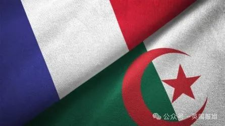
1830年，法国以一个外交事件为战争理由，开始入侵阿尔及利亚，并迅速占领了该国大部分地区。
随后的百余年中，法国逐渐扩展控制权，并从此开始了对非洲的入侵殖民。
法国人一直实行严格的殖民政策，大量法国人涌入阿尔及利亚，歧视、压迫、剥削着阿尔及利亚人民，留下了血海深仇……
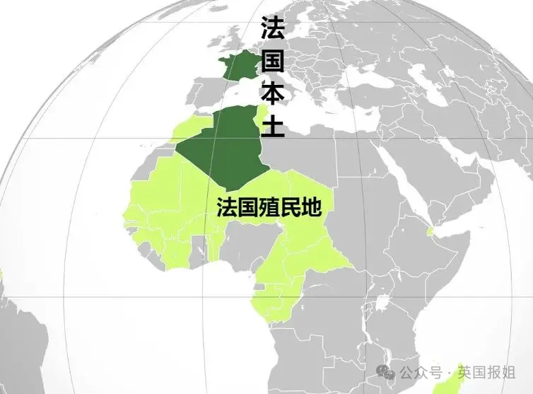
（图源：澎湃新闻）这段历史不用过多描述，因为我们也曾面临着类似的屈辱。
而阿尔及利亚人民，在这期间也在艰苦卓绝的抗争着。
第二次世界大战后，这种情绪达到了高潮。
1945年，一次大规模屠杀事件导致数千名阿尔及利亚人丧生，进一步激发了独立运动。
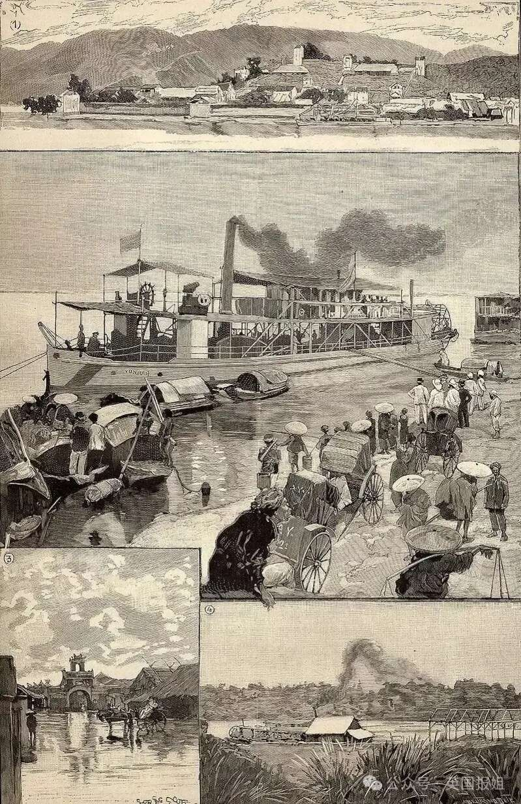
1954年，阿尔及利亚独立战争开始，这场惨烈的战争持续了八年，期间发生了许多激烈的战斗、恐怖袭击和镇压行动。
为了站起来，阿国人民付出了艰苦卓绝的牺牲和奋斗，并在最后将其写进了国歌《誓言》。
“法国啊，你们的大势已去矣；
我们将你们的章节写完毕。
法国啊，算账的日子已接近，
就准备好响应我们的反击，
我们革命不再是纸上谈兵，
我们要让阿尔及利亚活下去！”
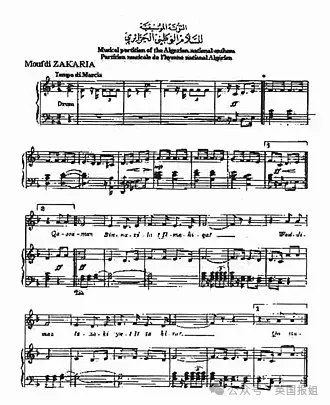
1962年，法国终于承认了阿尔及利亚独立……
有这样的历史渊源，阿尔及利亚人对这次能在巴黎夺冠，确实是很兴奋。
尤其是这次夺冠的的运动员，17岁的凯莉亚·内穆尔，其实也和法国“渊源”不浅……
她因为被法国体协处处为难，才转而为阿尔及利亚出战，打败了前队夺得金牌……
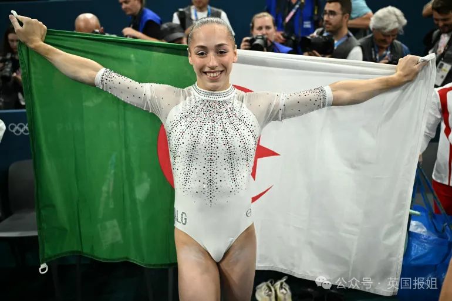
2006年12月30日，凯莉亚出生于法国圣伯努瓦拉弗雷。
她父亲是拥有双重国籍的阿尔及利亚人，母亲是法国人，所以小姑娘也自然拥有双重国籍，觉得自己既是法国人，又是阿尔及利亚人。
不过一开始，她肯定是更“亲”法国的。
她的母亲是体操馆的馆长，因此她从4岁开始接触体操运动，并很快被法国教练发现，带到了法国的训练队，和法国姑娘们一起训练……
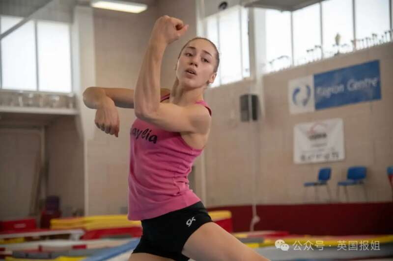
她是个天才，毫无疑问。
在同期的小姑娘中，凯莉亚一直表现得最出色，所有高难度动作都是第一个掌握。
从她12岁那年起，她就在法国锦标赛等各个大赛上夺下了各种荣誉。
2021年，她更是成为了法国高低杠的全国冠军。
所有人都看得出来，她将会成为为法国夺下世界最高荣誉的种子选手。
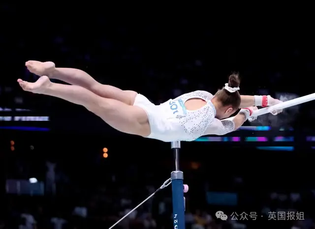
那时，凯莉亚进入法国国家队的未来，看上去近在咫尺——甚至她已经为此做好了准备。
然而，变故就在此时发生了。
法国体操联合会宣布了新的训练指导方针，要求所有有潜力的成员都不能再自行选择训练地点，必须到巴黎或圣埃蒂安进行全日制训练。
对于凯莉亚来说，这项法令很荒谬：“我几乎从出生起就一直在这里，我家离训练场只有几步之遥。我对我的教练们非常满意。我为什么要离开呢？”
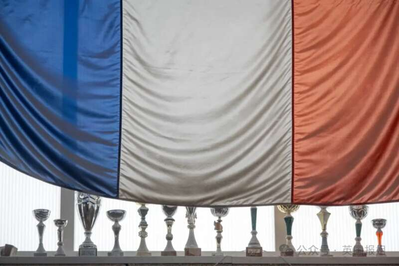
（体操馆奖杯）而另一个问题，让事情雪上加霜。
2021年，凯莉亚被发现患有晚期骨软骨炎，这种炎症通常与关节反复受压有关，必须对双膝进行手术。
虽然骨软骨炎在体操运动员中很常见，甚至是先天性的，但法国体操协会坚持认为，这都是凯莉亚教练的错。
他们以此为理由，要求凯莉亚必须来巴黎集中训练。
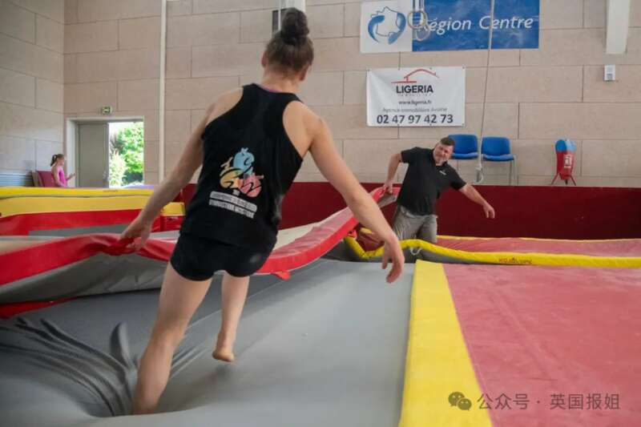
凯莉亚不愿意接受，因此事态急转直下……
她母亲的体操馆很快因此被剥夺了国家训练中心的地位，同时也失去了资金。
她的教练因此失去了国家教练的职位，并被指控他们“过度影响未成年运动员并对他们造成危害”。（47次调查后，教练被宣布无罪）
即使她的私人医生已经给了她恢复训练的许可，但体操协会的医生仍然禁止她恢复训练——除非她接受去巴黎。
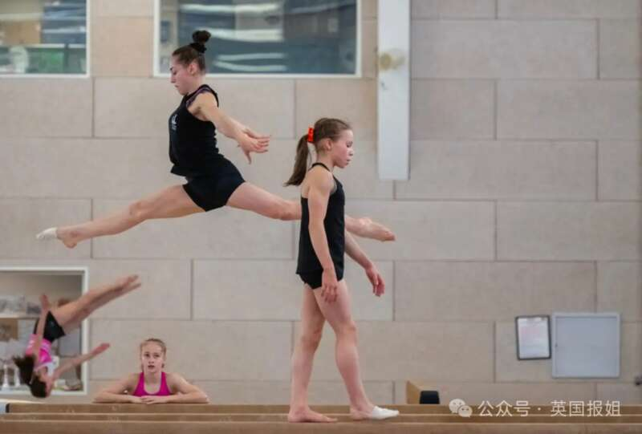
僵局随之形成。
凯莉亚有近一年的时间都没能参赛，可是，体操运动员的黄金年华是不能被拖延的。
“显然，我很生气、很难过，我不理解，我认为这不公平。”
“但我的教练说，当你不能走这条路时，你就走另一条路，而且总会有另一条路的。”
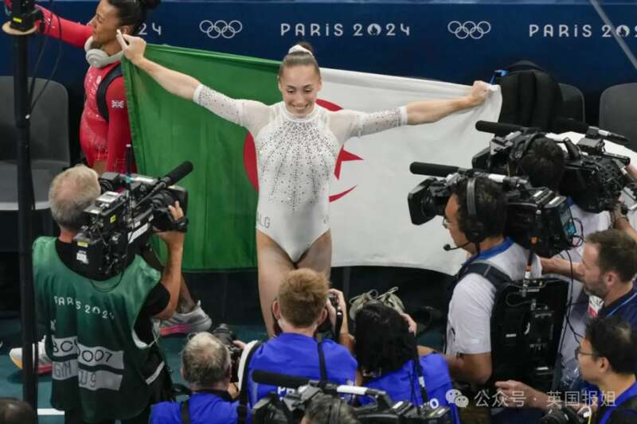
与此同时，阿尔及利亚高官亲自给她打来电话，请求她能够为阿尔及利亚出战。
他们告诉凯莉亚，非洲从未在女子体操项目中获得过世界或奥运会奖牌——你是我们的希望。
“我们会给你全力支持。”
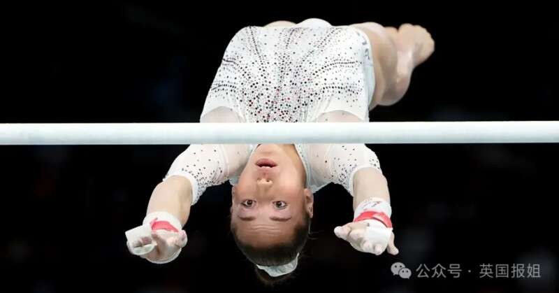
凯莉亚随后申请转投阿尔及利亚，却又被法国体操协会从中作梗。
根据国际规则，体操运动员必须获得原协会的释放函才能代表新国家参加比赛，否则将面临一年的延期。
——而法国体操协会，却坚持不可能放人。
这意味着，她将无法及时代表阿尔及利亚参加奥运会……
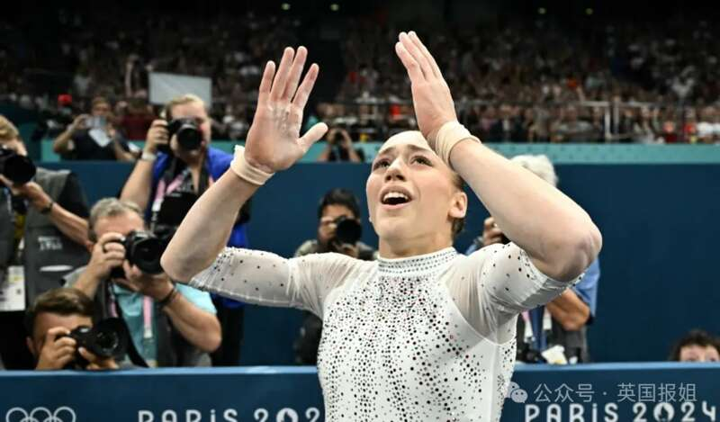
2023年初，一份网上请愿书开始流传，要求法国体操协会放人。
5月，法国体育记者发布了一份报告，记录了法国体操联合会虐待其他体操运动员的行为。
在多方面的影响下，法国体操协会终于释放了凯莉亚，并在最后时刻，允许她参加两周后的非洲锦标赛……
她凭借非洲锦标赛的团体铜牌和个人金牌，获得了世界锦标赛的资格，并成为第一位进入决赛的阿尔及利亚选手……
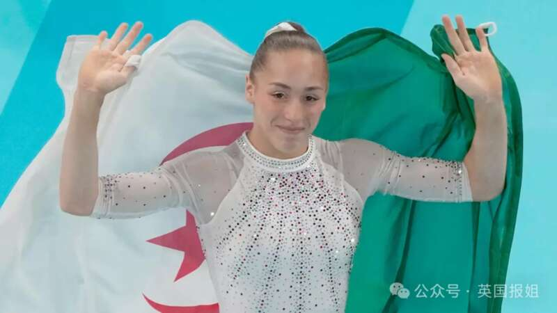
最终，她排除万难，代表阿尔及利亚，站到了赛场上，为阿尔及利亚获得了历史性的金牌……
凯莉亚表示，自己对于代表另一个国家在巴黎参赛“并不感到心痛”。
“参加奥运会是我的目标。”
“无论是为了法国还是阿尔及利亚，我，凯莉亚，都会站在赛场上。”
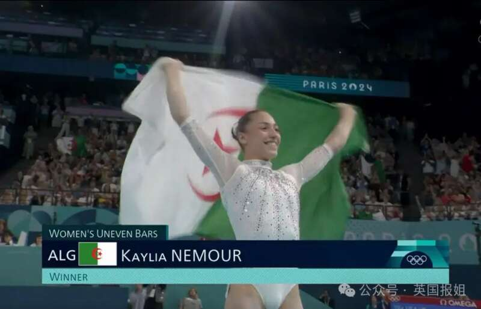
对于阿尔及利亚，对于凯莉亚，真的都是长舒一口恶气了。
眼睁睁看着因为自己的骚操作导致错失金牌的法国体操协会，大概肠子都悔青了吧……
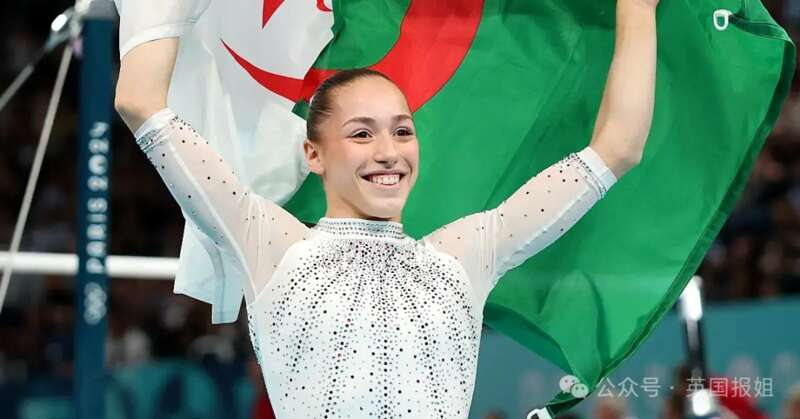